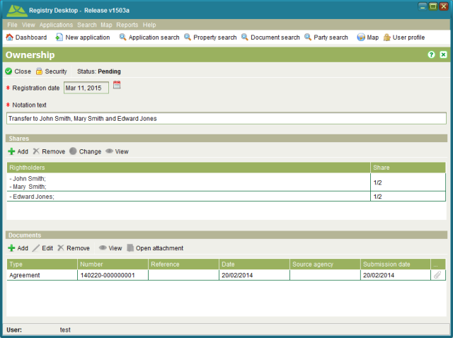
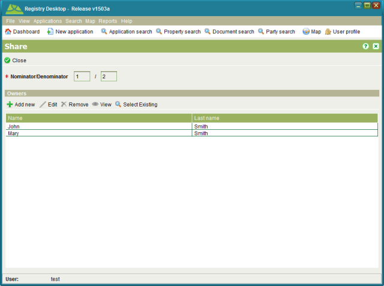

The Ownership RRR screen is used to display information for RRR that have named rightholders
with a defined share in the RRR. For example, the owners of a property can include multiple
parties with each party allocated a specific shareholding. The Ownership RRR screen can be
accessed from the Rights/Restrictions tab on the Property Details screen by selecting an
Ownership, Apartment Ownership or State Ownership RRR and clicking  View or
View or  Edit.
Edit.

Ownership RRR
When adding a new share to an Ownership RRR, you must indicate the shareholding as a fraction (e.g. ½) and list the parties that hold that share.

Ownership Share
Shares can be used to can represent Tenants in Common (divided shares) and Joint Tenancy (undivided shares) scenarios. Tenants in Common occur when two or more parties have a specific share identified. Joint Tenancy occurs when two or more parties are named on the same share. Registry can support combined Tenants in Common and Joint Tenancy scenarios as illustrated above.
To create, change or cancel a ownership RRR you must first lodge an application with the appropriate service i.e.; New Apartment Title, New Freehold Title, Registration on Title, Convert to Digital Title, Change of Ownership, Vary Right (General) or Remove Restriction (General).